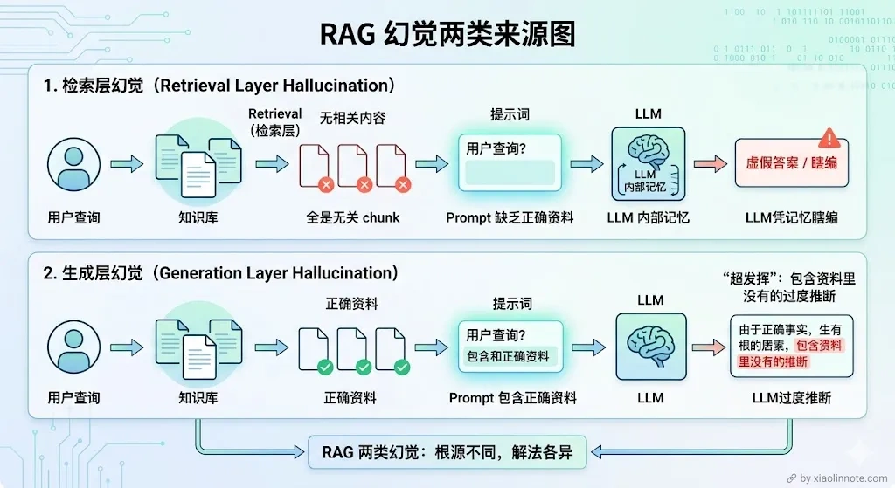
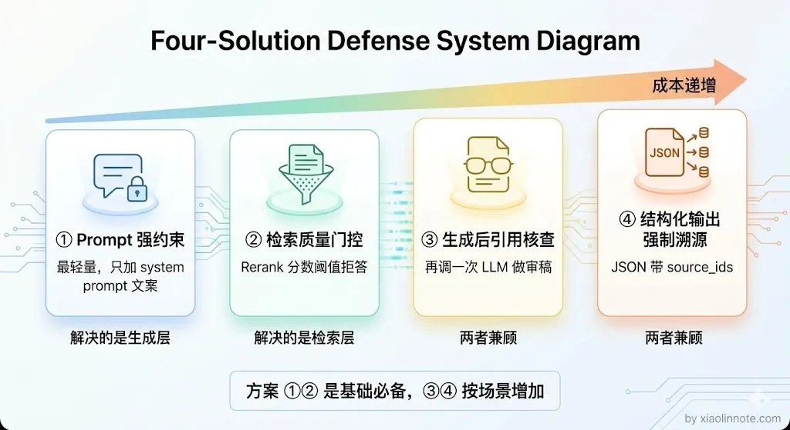
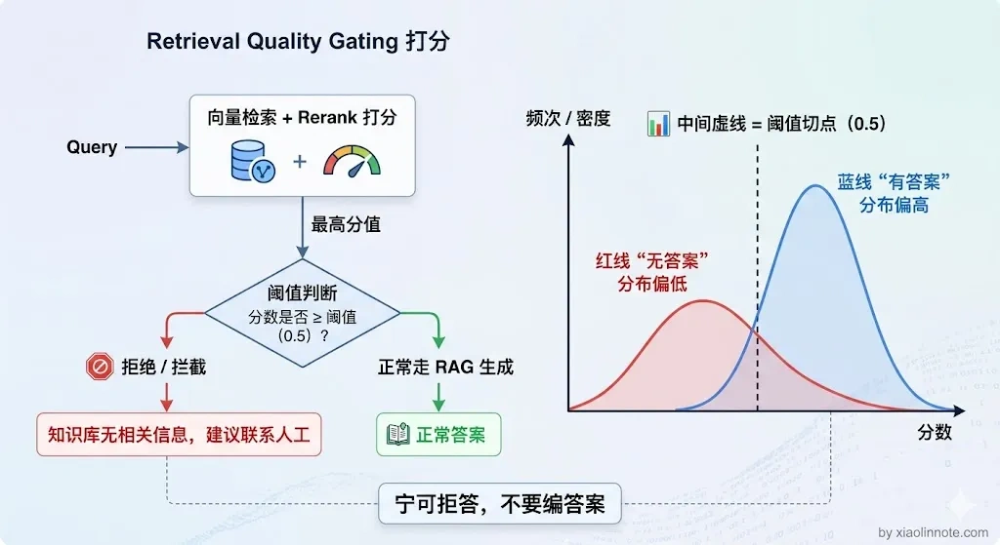
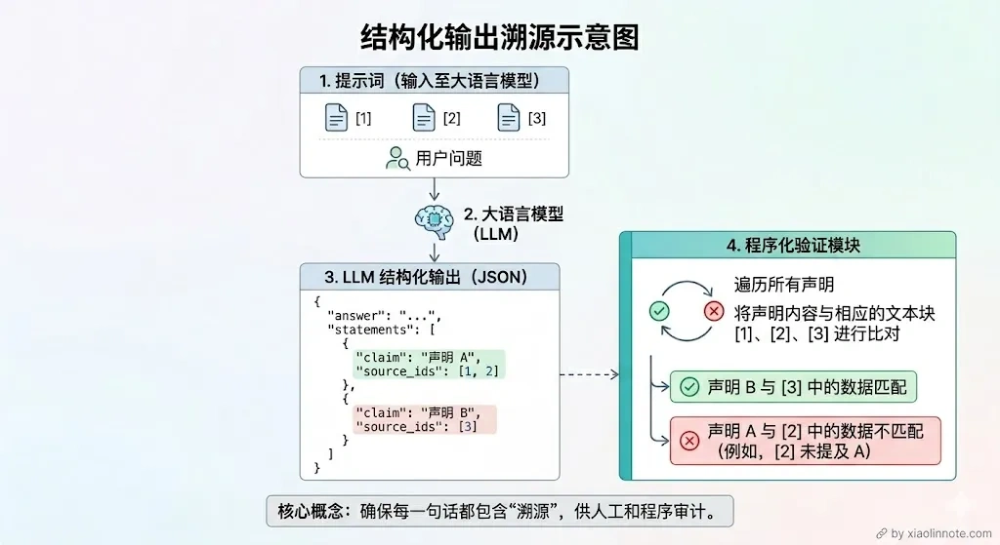
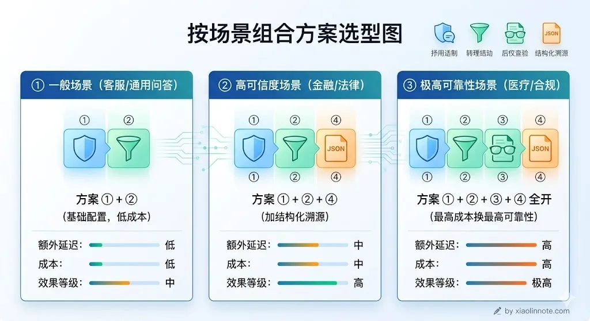

本篇目录
17. 如何规避 RAG 系统中大模型的幻觉？
👔面试官：RAG 系统中大模型的幻觉问题你怎么处理？
🙋♂️我：幻觉的话，我觉得只要检索到了相关内容，LLM 就不会编造了，所以关键是把检索做好就行了。
👔面试官：检索做好了就不会幻觉了？检索到了内容但 LLM 没有严格照着说的情况你怎么处理？这叫「生成层幻觉」，你连这个都没考虑过？
🙋♂️我：那我在 prompt 里加一句「请根据资料回答」应该就可以了？
👔面试官：加一句就够了？你知道 RAG 里的幻觉有两个完全不同的来源吗？检索层没找到和生成层超发挥，解法完全不一样。你就只会加一句 prompt？
面试官这里在考察你对 RAG 幻觉来源的理解深度，以及你是否有一套系统的防控策略。下面我从两类幻觉的根源出发，逐层讲清楚怎么规避。
💡 简要回答
我遇到过的 RAG 幻觉主要有两类。第一类是检索没有召回到相关内容，LLM 没有可用的上下文，靠自身知识在编造答案。第二类是检索内容召回了但 LLM 没有严格遵循，在文档内容的基础上加了自己的推断。我用来规避幻觉的策略主要有四个方向：第一是 Prompt 强约束，明确告知 LLM 只能根据提供的资料回答，资料里没有的就说不知道；第二是检索质量门控，Rerank 分数低于阈值就直接拒答，不让 LLM 在低质量上下文上硬撑；第三是生成后引用核查，每个关键的声明都要在 chunk 里找到来源依据；第四是结构化输出强制溯源，让 LLM 输出 JSON，每条结论必须附上来源编号。其中 Prompt 强约束加检索质量门控是我觉得成本最低、收效最快的组合，生产系统上线前这两个必须做。
📝 详细解析
幻觉是什么，为什么 RAG 里会有幻觉？
先说「幻觉」这个词是什么意思。LLM 的幻觉，就是模型一本正经地说了一件压根不存在的事。它不是在撒谎，它只是在「预测下一个词」，当它没有可靠依据时，就会拼凑出一个「听起来合理」的答案，但内容可能是错的。
你可能会想：RAG 不是已经把知识库的内容塞进 prompt 了吗，LLM 为什么还会编造？很多人以为做了 RAG 就不会有幻觉了，这是一个非常常见的误区。问题是，塞进去不等于 LLM 一定会「老老实实照着说」。LLM 有自己的「知识储备」（来自预训练），当 prompt 里的资料和它平时「学到的」不一致，或者 prompt 里根本就没召回到相关内容，它就可能绕开资料、自己发挥。
所以 RAG 里的幻觉有两个完全不同的来源，要分开理解：

第一种：检索层没找到，LLM 靠「猜」回答。
这是最根本的问题。RAG 的前提是「检索到了相关内容再生成」，但如果检索这一步失败了，向量没找到相关的 chunk，prompt 里就是空的或者全是不相关的内容，LLM 会怎么做？它不会说「我不知道」，它会用自己训练时见过的知识编一个看起来像答案的东西。这个答案可能和你知识库里的内容完全相反，而且 LLM 说得很自信，用户根本看不出来。
举个具体例子：你的知识库里记录的退款政策是「7 天无理由退款」，但某次检索没召回到这个 chunk，LLM 用自己的「知识」给出了「30 天退款」的答案，用户按这个信息去操作，结果退款失败，这就是检索层幻觉造成的实际损失。
第二种：检索到了，但 LLM 没有严格照着说。
那检索到了就安全了吗？也不是。这种幻觉更隐蔽，也更常见。相关的 chunk 确实被召回了，塞进 prompt 里了，但 LLM 在生成答案时「超发挥」了，它把资料里的内容作为基础，然后加了自己的推断、补充了原文没有的细节、甚至把两段不相关的信息混在一起拼出一个「更完整」的答案。读者很难分辨哪句话来自文档、哪句是 LLM 加的。
这两种幻觉的根源不同，解法也不一样。下面四个方案，是从「成本最低」到「机制最严格」依次递进的思路。

方案一：用 Prompt 告诉 LLM「只准照着资料说」
这是成本最低、最容易上手的方案，效果也立竿见影。很多人搭 RAG 时只是把 chunk 塞进 prompt，然后问「请回答这个问题」，并没有明确约束 LLM 的行为。LLM 就会觉得「这些资料只是参考，我可以结合自己的知识一起回答」，幻觉就这样产生了。
修复方法很简单：在 system prompt 里明确立规矩，只能用资料里的内容、资料里没有就说不知道、不准推断和补充。这几条规则，每一条都有它的道理：
回答规则：
- 只能使用【参考资料】中的信息来回答，不得引入资料之外的知识
- 如果参考资料中没有足够信息，必须明确回答：「根据现有资料，无法回答该问题」
- 回答时标注信息来源（来自哪条参考资料）
- 不要推断、不要猜测、不要补充资料中没有明确说明的内容
第一条的作用是让 LLM「知道自己的边界」，明确告诉它，你只是个传话人，不是百科全书，只能照资料说话。第二条给了 LLM 一个「合法的逃生出口」，当资料里没有答案时，说「不知道」比编一个看起来合理的答案要好得多，这条规则允许 LLM 优雅地认怂。第三条让 LLM 在回答时主动对照原文，相当于给它加了一个自检动作，哪句话来自哪条资料必须说清楚。
这个方案能压制「生成层幻觉」，但对「检索层幻觉」帮助有限，如果 prompt 里根本就没有相关内容，再强的约束也顶不住 LLM 瞎编。所以还需要下面这个方案配合。
方案二：检索质量差时，直接拒绝回答
方案一解决了「LLM 超发挥」的问题，但如果检索这一步就失败了，prompt 里全是无关内容，光靠 Prompt 约束是拦不住的。那怎么办？与其让 LLM 在低质量的上下文里强行生成一个「可能是错的答案」，不如直接告诉用户「知识库里没有这个信息」。前者让用户误以为答案是对的，后者虽然看起来不那么智能，但至少不会给用户错误信息。
怎么判断检索质量够不够好？用 Rerank 模型打分。整个流程很直接：检索召回 top-K 个候选 chunk，Rerank 模型对每个候选打一个 0 到 1 的相关度分数，然后看最高分的值。如果最高分低于阈值，说明这次检索根本没找到有用的内容，直接返回「知识库无相关信息，建议联系人工」，不让 LLM 强行回答；如果最高分达标，就把所有达标的 chunk 筛出来喂给 LLM。
这个阈值到底设多少？没有通用数字，得按你自己的业务数据调。调法是拿一批「已知答案在知识库里」和「已知答案不在知识库里」的测试集跑一遍，看 Rerank 分数分布，找那个能把两类分开的切点。一般经验值在 0.3 到 0.6 之间：对精度要求高（金融、医疗）偏高，对召回率宽松（闲聊型问答）偏低。先从中间值开始，根据线上误判的样例往上或往下调。

你可能会觉得，「拒答」这个行为会让系统显得很笨。但反过来想：用户问了一个知识库覆盖不到的问题，最好的答案就是「我不知道，请联系人工」，而不是 LLM 编一个听起来合理但实际错误的回答。答错比不答更危险。
结合方案一和方案二，就能同时压制两类幻觉：方案二负责「检索质量差时不让 LLM 胡说」，方案一负责「检索质量还行但 LLM 容易超发挥时把它框住」。这两个是 RAG 系统上线前的基础配置，成本也最低。
方案三：答案生成后，逐条核查有没有「凭空捏造」
前两个方案都是在「生成之前」做防控，那万一还是漏了呢？这个方案就是在「生成之后」做校验。思路是：LLM 生成完答案，再用另一个 LLM（或者同一个 LLM）回头检查，答案里的每一条关键信息，在 chunk 里有没有对应的依据。没有依据的内容，标注「无法核实」或者直接删掉。实现方式是发起「第二次 LLM 调用」，把原始答案和 chunk 一起送给 LLM，让它充当编辑角色，逐条核查每个声明有没有来源支撑。就像文章写完还要请编辑审阅一遍，方案一是事前约束作者的行为，方案三是事后审稿。
这个方案的代价是多一次 LLM 调用，响应延迟会增加，成本也会翻倍。所以一般只在对准确性要求极高的场景使用，比如医疗问诊、法律咨询，答错了代价很大的地方。普通的企业知识库问答，方案一 + 方案二组合通常已经够用。
方案四：强制 LLM 输出时带上来源编号
如果说方案三是在内容层面做校验，那方案四就是在格式层面做约束，和方案一的「Prompt 约束」配合使用效果更好。让 LLM 输出结构化的 JSON，每个结论都必须填写来自哪条参考资料的编号。这样一来，用户看到答案的同时就能看到来源，系统也可以自动验证每条结论的来源 ID 是不是真实存在。LLM 输出的格式大致是这样：
{ "answer": "完整回答", "statements": [ {"claim": "具体结论1", "source_ids": [1, 2]}, {"claim": "具体结论2", "source_ids": [3]} ], "confidence": "high/medium/low" }
这个方案为什么有效？
原因有两个：一是 LLM 在构建 JSON 时必须主动想「这条结论我从哪条资料里找到的」，这个过程本身就会减少瞎编的概率，就好比你让学生写论文必须标注参考文献，他自然就不敢随便编了；二是系统拿到 JSON 后可以做程序化验证，source_ids 里的编号如果对应的 chunk 和 claim 明显不相关，就可以自动过滤掉这条结论。

四个方案怎么组合？
从易到难，按场景递进来看：普通的企业知识库和客服问答，方案一加方案二是必须做的基础配置，成本极低，幻觉问题能解决大半；对可信度要求高的场景，比如金融分析、法律文档，再加上方案四，让每条答案都带上来源编号，用户可以自己去原文核实；对准确性要求极高、容错率极低的场景，比如医疗问诊、合规审核，答错了代价很大，这时候四个方案全上，在延迟和成本上付出代价，换取最高级别的准确性保证。

说到底，规避幻觉没有一劳永逸的银弹。最重要的认知是：检索质量是幻觉的最大来源，检索到了正确的内容，Prompt 再稍微约束一下，幻觉就已经少很多了；如果检索这一步就烂，再多的生成层约束也填不了这个坑。所以治幻觉，先治检索。
🎯 面试总结
回到面试官的追问，「检索做好了就不会幻觉」这个想法是错的。RAG 里的幻觉有两个来源：检索层没召回到内容，LLM 靠自身知识编造；以及检索到了但 LLM 超发挥，在资料基础上加了自己的推断。
「在 prompt 里加一句请根据资料回答」也远远不够，你需要一整套系统的防控策略：Prompt 强约束压制生成层幻觉，检索质量门控在检索失败时直接拒答，生成后引用核查做二次校验，结构化输出强制溯源让每条结论都有据可查。成本最低、收效最快的是 Prompt 约束加检索门控的组合，生产系统上线前这两个必须做。记住核心原则：治幻觉，先治检索。
对了，大模型面试题会在「公众号@小林面试笔记题」持续更新，林友们赶紧关注起来，别错过最新干货哦！